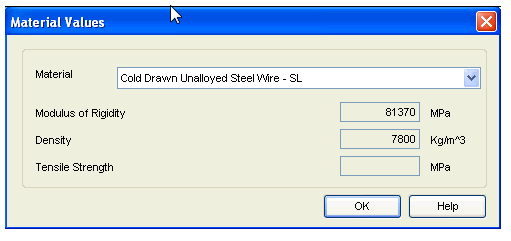
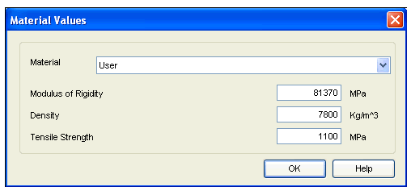
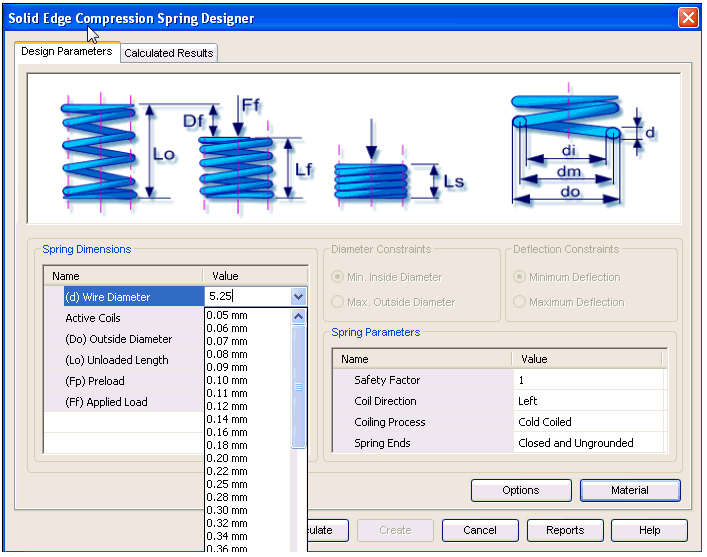

Compression Spring Material selection
The Material button is given on Design Parameters tab to select the material of the spring.
Click on this button, the Material Selection window will open.
SEER has given some standard materials for calculation purpose.
Standard Material
Simply select the material from material selection control. The values for Modulus of Rigidity and Density will be automatically displayed as per the material, which are stored in database. Remember when you are using SEER Standard material you cannot change these values. The value of Tensile strength varies as per material selected and Wire Diameter of the spring. Therefore it is not displayed but it is taken directly from the database. The value is shown on Calculated Results tab under strengths.

User Specific Material
In case you want to enter your own values, then you have to select a User material from material selection control.
In User selection mode, you can either select standard wire diameter or can enter your own value in Wire diameter field of Spring Dimensions on Design Parameters tab.
Now the entry field for Modulus of Rigidity, Density and Tensile Strength on material window and wire diameter of Spring Dimensions on Design Parameters tab will get enabled and you can enter own values.


In User material mode, you are expected to enter the value of Tensile Strength as Ultimate Tensile Strength.
Learn more
Compression Spring moduleUsing the Compression Spring module
Compression Spring Design Parameters tab
Compression Spring Calculated Results tab
Compression Spring tutorial
How to (Compression Springs)
Frequently asked questions (Compression Springs)
Standards used for Compression Spring calculations